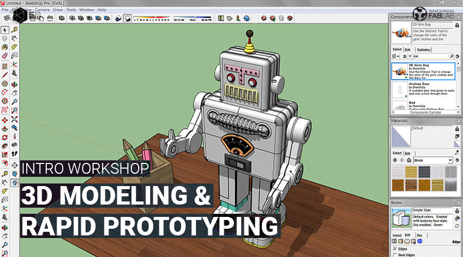
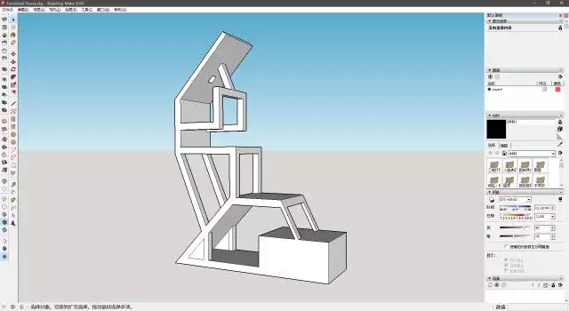

WORKSHOP
LEARN 3D MODELING & RAPID PROTOTYPING (SKETCHUP) | 入门3D建模和快速原型制作(SKETCHUP)

When:Saturday, July 8, from 2pm to 5pm
Where: Xinfab - 665,Changhua Road, Jing'an District, Shanghai (DT Space)
Price: 150 RMB (3 hours workshop)
Ever wondered if you can create an object all by yourself?
Join Yuruky at Xinfab to learn the basics of 3D modeling with Sketchup Make, so that you can start shaping your ideas into an actual object.
You will learn how to use Sketchup and create basic 3D shapes - you can then use this knowledge to start making anything, really!
Sketchup Make is a free software that is super simple to use.
Things you should bring:
// Your laptop, charger and a mouse (you will have a hard time without a mouse)
// Please install Sketchup Make before you come! (Download here: http://t.cn/RqWLMmo)
// Your passion, curiosity, and questions



WORKSHOP SCHEDULE
// STEP 1: Introduction to FabLabs
_Digital Fabrication
_Rapid Prototyping
// STEP 2: Introduction to 3D Modeling
_Overview of Sketchup Make
_Introduction to the tools and functions
_Practice building some models
///////////////////////////////////
HOW TO SIGN UP
// Alipay
Transfer the workshop fee to pay@xinfab.com (please indicate your phone number on the payment details so we can contact you!)
Questions? Can't pay via Alipay? Send an email to info@xinfab.com.
///////////////////////////////////
ABOUT THE TEACHER

Yuruky is a chinese digital maker since he worked at Xinfab as our former space manager. He has since moved on to work in the film industry as a film critic but continues to be a Xinfabber at heart and help out whenever he can.
时间:：7月8日星期六，14:00 - 17:00
地点： 新Fab - 上海市静安区昌化路665号（DT空间）
价格： 150元 （3个小时车间）
有没有想过你是否可以自己创建一个对象？
在新fab，我们将向您介绍使用Sketchup Make创建3D建模的基础知识，以便您可以开始将您的想法变成实际的对象。
SketchupMake是一个用户友好且易于使用的免费软件。
需要带上
// 笔记本电脑及其充电器
// 滑鼠 (你没有的话，对你不方便）
// 请先安装好Sketchup Make软件（下载地址：http://t.cn/RqWLMmo）
// 你的热情、好奇心和问题
///////////////////////////////////
工作坊流程
// 第1步：FabLab介绍
_数字制造
_快速原型
// 第二步：3D建模软件介绍
_SketchupMake入门
_工具介绍
_实例训练
///////////////////////////////////
如何注册
// 支付宝
车间费转移到pay@xinfab.com（请在付款明细上注明您的电话号码，以便我们与您联系！）
有问题? 不能通过支付宝付款？ 发送电子邮件到 info@xinfab.com.
///////////////////////////////////
关于教师
Yuruky是一名中国数字制造商，因为他曾在新fab担任我们的前任空间管理。 他已经转移到电影界的电影评论家，但是继续是一个新fabber - 他每次有机会就来快乐地帮助我们。